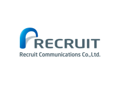

Recruit Communications, Co. Ltd.
Data Engineer / December 2018 - Present
Recruit Communications is a subsidiary of Recruit Holdings, one of Japan's largest HR companies. I joined the Data Engineering team in December of 2018 after working as an intern over the summer. As a data engineer, I have been responsible for building and implementing computer vision machine learning models using the deep learning software TensorFlow. I have also contributed to the maintenance of PyQUBO, a domain-specific language for constructing QUBOs from mathematical expressions, and am currently writing a paper explaining its usage, to be submitted in March 2020.